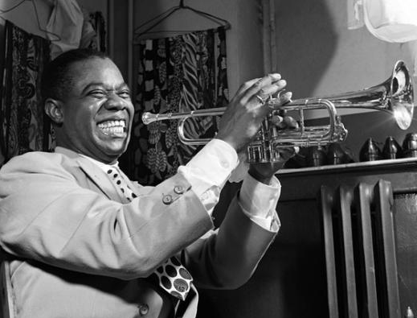

루이 암스트롱
재즈라는 장르에서 절대 빼놓을 수 없는 거장인 루이 암스트롱(Louis Armstrong)은 미국의 재즈 트럼펫 연주자 겸 가수
그는 음악가로서 미국, 그리고 전 세계의 문화에 큰 영향을 끼친 인물이며, 재즈 역사에 기념비적 발자취를 남긴 전설적인 음악인이다.
모국인 미국에서는 대다수의 역사 교과서의 근현대의 문화 파트에 빠지지 않고 등장하는 역사적 인물이기도 하다. 미국의 근대 사회와 문화의 한면을 대표하는 인물이라는 것.
애칭은 입이 굉장히 컸던 데서 유래한 '사치모(Satchmo)'. 원래는 책가방만큼 입이 크다고 해서 새철 마우스(Satchel mouth)라고 불렸지만
이걸 줄여서 사치모, 또 더 줄여서 사치(Satch)라고도 했다. 이외에도 하마 입이라는 뜻의 디퍼마우스(Dippermouth)라는 별명도 있었고,
이 별명에서 나온 Dippermouth Blues라는 재즈 스탠더드 곡도 있다.
주 활동시대는 초창기 재즈 시대 부터 1970년대인 현대 모던재즈시대까지 거의 전부를 살았다.
평생에 걸쳐 활발한 활동을 했기 때문에 음반 자료도 많고 음악의 발자취와 변화 양상을 확인하기도 비교적 쉬운 편이지만,
1930년대 이후에는 음악사적으로 남을 만한 큰 변화는 없었다. 기본적으로는 뉴올리언스 재즈의 전통을 바탕으로 하고 있었고,
거기에 자신의 화려하고 감수성 풍부한 솔로 연주나 노래를 얹어놓는 것이 일관된 음악 스타일이었다.
트럼펫 솔로의 경우 빠른 템포의 곡에서는 높은 음에서 아래로 미끄러지듯 떨어지는 글리산도를 거듭 연주하며 끝내는 경우가 많았고,
종종 흑인 영가나 유행가, 행진곡, 오페라 아리아의 멜로디를 인용하기도 했다.
하지만 저 솔로만으로도 암스트롱은 계속 본좌일 수밖에 없는데, 암스트롱 이전까지만 해도 재즈에서 즉흥 연주는 기껏 두세 마디 정도로 매우 짧았고
그것 마저도 매우 단순했다. 하지만 암스트롱은 코러스를 전체 합주로 연주한 뒤 리듬 섹션이 곡의 코드(화음)를
기반으로 깔아주는 반주 위에서 더 길고 효과적인 즉흥 연주를 선보였고, 이후 이 즉흥 연주 스킬은 뉴올리언즈 재즈와 래그타임을
필두로한 초창기 재즈 리듬은 물론 스윙재즈, 비밥, 하드 밥, 쿨 재즈, 프리 재즈, 퓨전 재즈, 뉴 트래디셔널(혹은 컨템퍼러리)
재즈에 이르기까지 어떤 종류에서든 모든 재즈 연주자들의 필수요소가 되었다.
또 단어의 내용이나 의미에 구애받지 않고 자신의 목소리를 악기 삼아 부른 스캣도 이후 재즈 보컬리스트들이 지나칠 수 없는 업적이 되었다.
암스트롱의 목소리는 가래 끓듯 매우 걸걸한 허스키 톤이라 결코 매끈하고 아름답지는 않았지만,
오히려 그 목소리를 자신의 트럼펫 연주 스타일과 결부시켜 누구도 흉내낼 수 없는 독창적인 영역으로 발전시켰다.
실제로 들어보면 아주 신기한 것이, 목소리 자체는 80 노인의 가래 끓는듯한 목소리인데 그 목소리가 퍼지는 부분은 기겁할 정도로 깔끔하다.
스캣 없이 그냥 노래만 부른 경우에도 특유의 기질과 개성을 강하게 드러냈기 때문에,
What a Wonderful World 같은 암스트롱의 히트 넘버들은 다른 가수가 부르더라도 암스트롱식의 표현을 쉽게 모방하기 힘들 정도다.
루이 암스트롱의 음악을 들으면 언제나 한결같이 '이 남자는 정말 진심으로 기뻐하면서 음악을 연주하고 있다.'는 느낌을 받는다.
그 느낌은 놀랄 만큼 강력한 전염성을 갖고 있다. 마일스 데이비스는 루이 암스트롱의 음악을 존경하면서도 한편으로는 무대에서 백인 청중을 향해 이를 드러나고
싱긋싱긋 웃는 그의 연예인 근성을 가차 없이 비판했다. 하지만 루이는 정말 즐겁고 신이 나서 웃었을 것이라고 상상한다. 자기가 이렇게 살아서 음악을 연주하면,
사람들이 귀 귀울인다는 그 사실만으로도 더할 나위없이 행복해서 체면이니 염치니 생각할 겨를도 없이 그저 자연스럽게 싱긋싱긋 이를 드러내고 웃었을 것이라고.